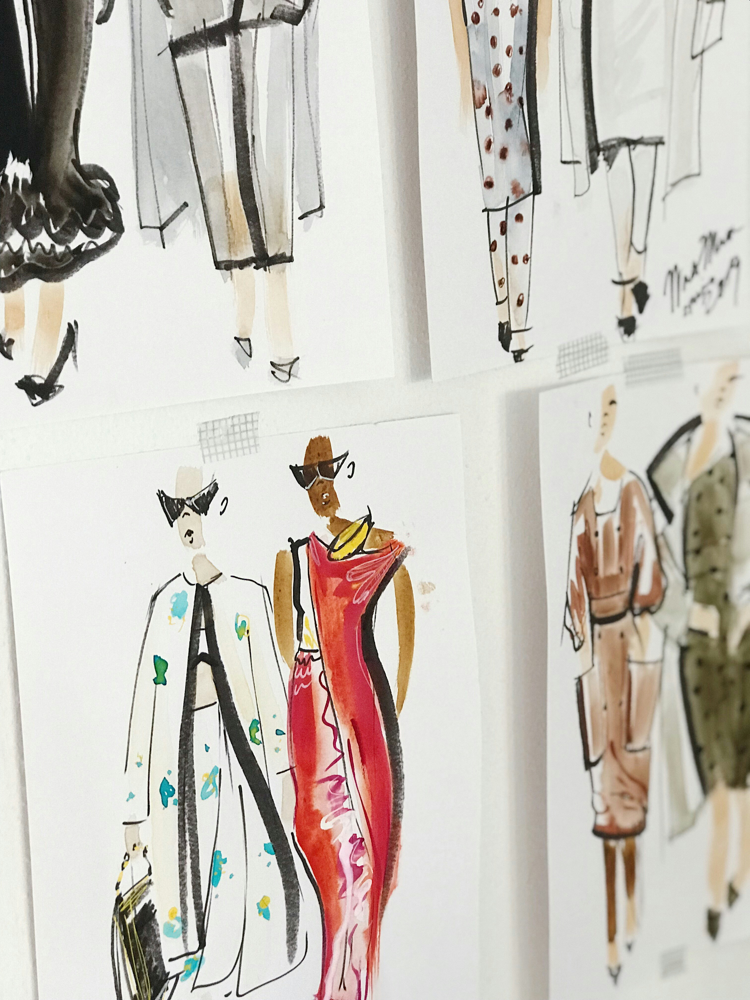

New York City is known for its strong influence on fashion, with a style as diverse as its population. Whether you're into luxury brands, vintage finds, streetwear, or the latest trends, NYC offers something for everyone. The city's fashion scene is always changing, setting trends that impact the industry worldwide. From the high-end boutiques of Manhattan to the laid-back vibe of Brooklyn, fashion in New York reflects the unique blend of cultures that call the city home. It’s a place where personal style meets creativity, making it one of the most influential fashion capitals in the world.
NYC Fashion
“New York is the perfect place to be a fashion designer because it’s the crossroads of the world.” — Michael Kors
